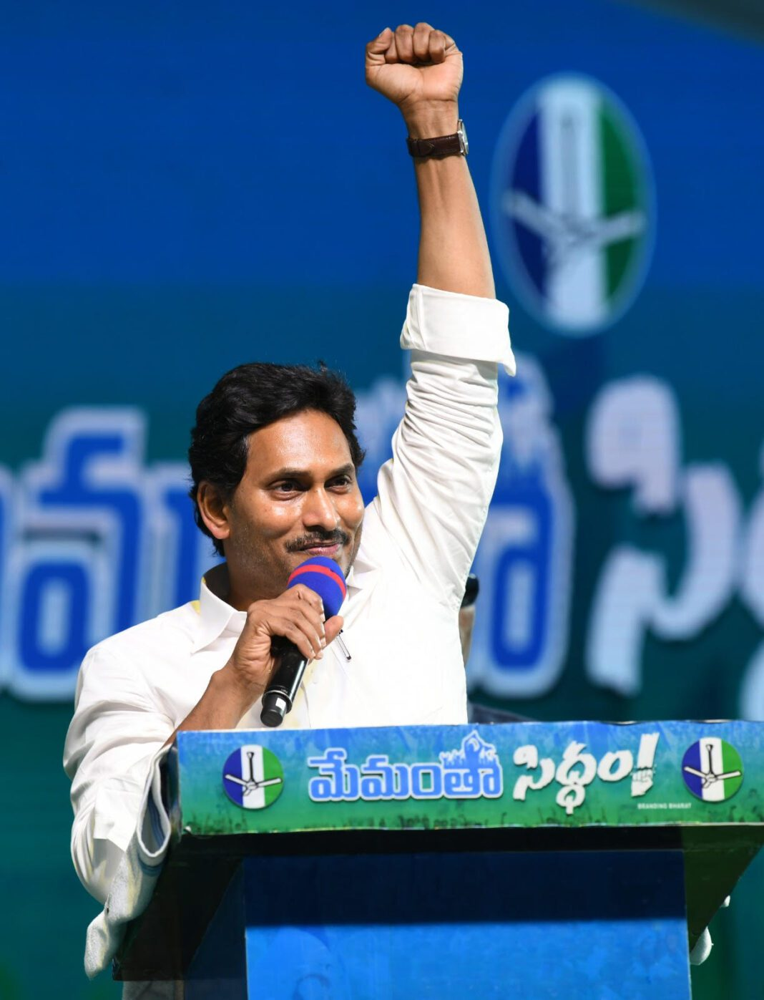

దొంతిరెడ్డి నరేంద్ర రెడ్డి
లంకెలకురపాడు యువనేత దొంతిరెడ్డి నరేంద్ర రెడ్డి అధికారిక వెబ్ పేజీలోకి స్వాగతం. ఇక్కడ, నరేంద్ర రెడ్డి గారి సమాజ సేవ, అంకితభావం, నాయకత్వం ద్వారా మా సమాజ అభివృద్ధి కోసం చేసిన కృషిని జరుపుకుంటాం.
చిత్రం: దొంతిరెడ్డి నరేంద్ర రెడ్డి సమాజ సమావేశంలో యువతను ఉద్దేశించి ప్రసంగిస్తున్నప్పుడు.
నరేంద్ర రెడ్డి గారి గురించి
దొంతిరెడ్డి నరేంద్ర రెడ్డి లంకెలకురపాడు ప్రాంతంలో కీలక వ్యక్తి, యువతను శక్తివంతం చేయడంలో, సమాజ అభివృద్ధిని ప్రోత్సహించడంలో నిత్యం అంకితభావంతో ఉంటారు. విద్య, సామాజిక సంక్షేమం, పర్యావరణ స్థిరత్వంపై ఆయన దృష్టి సారించారు.
సాధనలు
- అనేక సమాజ శుభ్రత కార్యక్రమాలను నిర్వహించారు.
- యువత కోసం నైపుణ్యాభివృద్ధి కార్యక్రమాలను ప్రారంభించారు.
- గ్రామంలోని విద్యా సదుపాయాలను మెరుగుపరచడంలో కృషి చేశారు.
- స్థానిక రైతుల్లో స్థిరమైన వ్యవసాయ పద్ధతులను ప్రోత్సహించారు.
భవిష్యత్ లక్ష్యాలు
డిజిటల్ సాక్షరతను మెరుగుపరచడం, మరింత ఉద్యోగ అవకాశాలను సృష్టించడం, మరియు ప్రతి నివాసికి నాణ్యమైన వైద్యసేవలను అందించడం ద్వారా లంకెలకురపాడు జీవన నాణ్యతను పెంచడం నరేంద్ర రెడ్డి గారి లక్ష్యం.
ప్రధాన సంక్షేమ కార్యక్రమాలు
నరేంద్ర రెడ్డి గారు తీసుకురావాలనుకుంటున్న సంక్షేమ కార్యక్రమాలు:
- అమ్మ ఒడి (Mother's Lap) - విద్యార్థుల తల్లులకు ఆర్థిక సాయం.
- రైతు భరోసా - రైతులకు అంగీకరించిన ధరలపై మద్దతు.
- ఆధునిక వైద్య సేవలు - గ్రామంలో అన్ని వైద్య అవసరాలకు సులభమైన ప్రాప్తి.
- నైపుణ్యాభివృద్ధి - యువత కోసం ఉద్యోగ అవకాశాల సాధన కోసం ప్రాచీన మరియు ఆధునిక నైపుణ్యాలపై శిక్షణ.
నవీన అభివృద్ధి
గిఫ్: సమాజ అభివృద్ధి సమావేశంలో నరేంద్ర రెడ్డి.
భవిష్యత్ అధ్యక్షుడు
దొంతిరెడ్డి నరేంద్ర రెడ్డి గారు భవిష్యత్లో లంకెలకురపాడు గ్రామ సమాజ అధ్యక్షుడిగా బాధ్యతలు స్వీకరించేందుకు సిద్ధంగా ఉన్నారు. ఆయన సేవా భావం, దృఢమైన నాయకత్వం గ్రామానికి ఆశాజ్యోతి.no one can do this